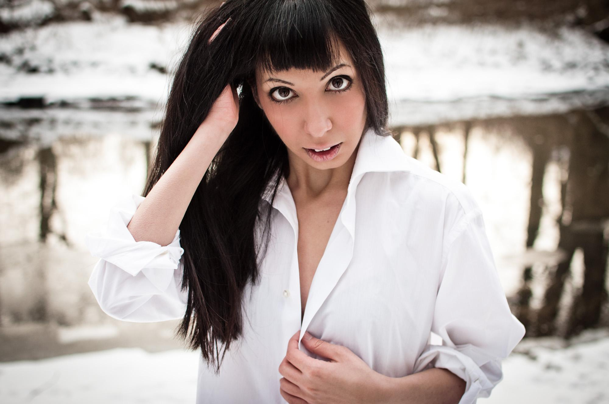
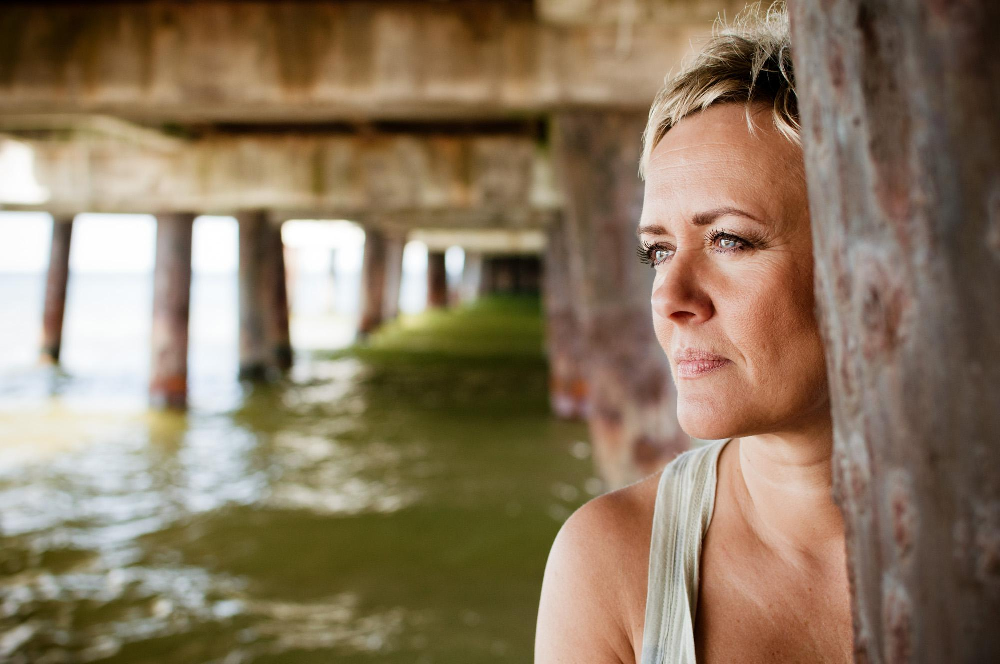
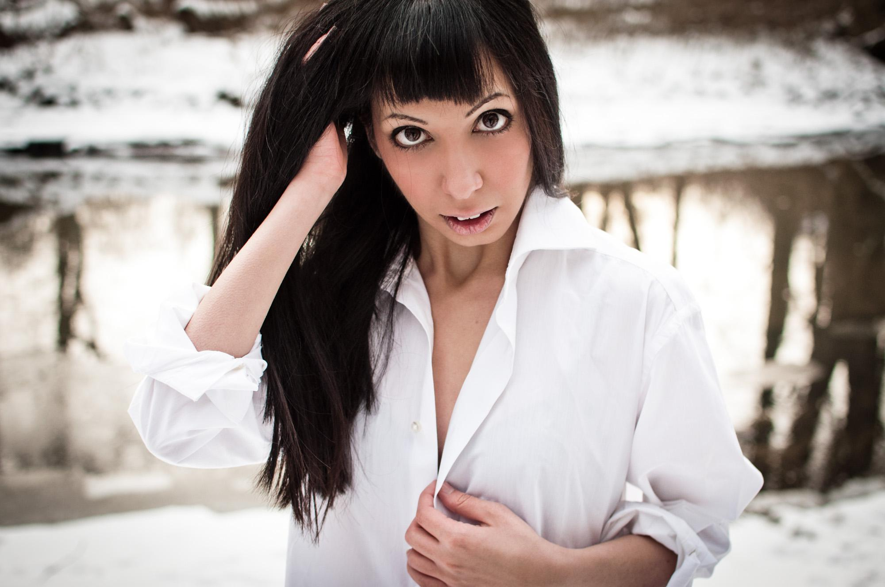
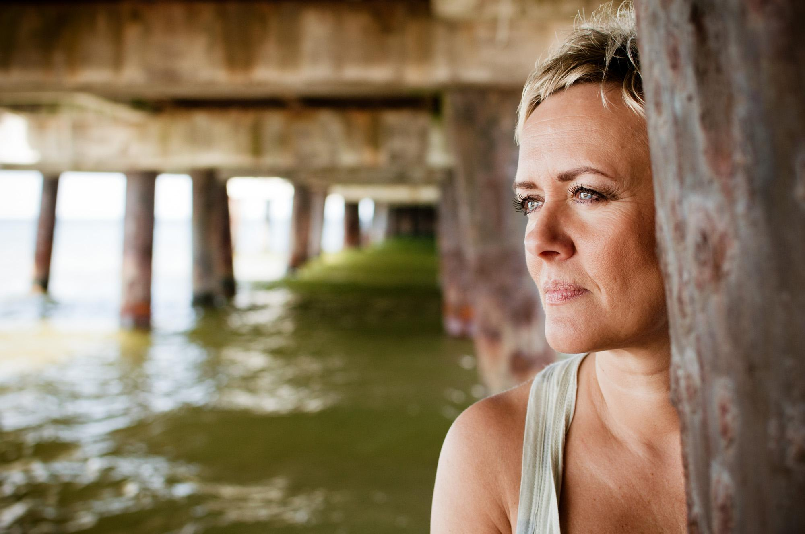
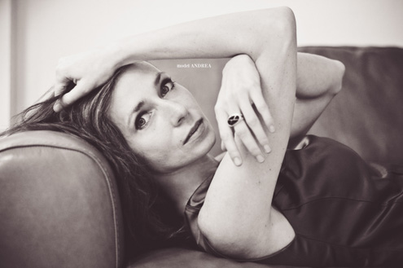
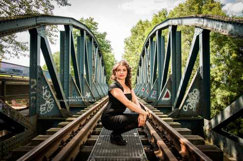
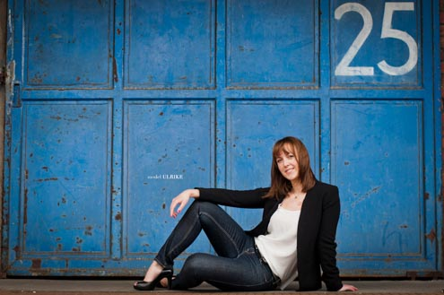

Sophia von Blacha
Die Künstlerfotografin
Das kannst Du von mir erwarten:
- kreative und authentische Aufnahmen, die genau auf Dich und das Thema des Shootings abgestimmt sind,
- einen besonderen Blick für Ästhetik, bei Komposition, Blickwinkel und natürlicher Nachbearbeitung,
- klassische oder außergewöhnliche, inszenierte oder spontan entstandene Fotografien,
- vollen Einsatz bei der Planung, Durchführung, Postproduktion-Prozessen und bei der Lieferung der Ergebnisse,
- schnellen Service und Verlässlichkeit.
Ich freue mich auf Deine Nachricht!
Neue Rolle? Neues Image?
Schnell anschreiben und einen Termin
für Dein persönliches Shooting sichern!
für Dein persönliches Shooting sichern!
Alle Shootings werden bei mir immer auf den Kunden persönlich zugeschnitten,
damit die Einzigartigkeit der Bilder gewährleistet wird.
Je nach gewünschtem Effekt, werden die Fotografien mit Natürlichkeit beschenkt
oder mit etwas Eleganz und Extravaganz bereichert.
Hier dazu einige Beispiele

Shooting mit
Andrea
Shooting mit
Angelina

Shooting mit
Barbara
Shooting mit
Edyta

Shooting mit
Ewgenia
Shooting mit
Gizzy
Shooting mit
Gosia

Shooting mit
Isabel und Izzy

Shooting mit
Karolina

Shooting mit
Kasia

Shooting mit
Kata

Shooting mit
Ksenia
Shooting mit
Martin

Shooting mit
Mirja

Shooting mit
Natalia

Shooting mit
Olga

Shooting mit
Roxi

Shooting mit
Janusz Konieczko

Shooting mit
Toini

Shooting mit
Ulrike
In nur wenigen Schritten bis zur professionellen Bildern
von Sophia von Blacha Photography
Nachricht schicken
Schreib mir einfach eine kurze E-Mail mit Deiner Ideen-Vorstellung und einem Termin, an dem Du gerne das Shooting machen möchtest. Ich werde dann ebenso einige Ideen sammeln mich kurzfristig bei Dir zurückmelden.
Location aussuchen
Die Location zur Umsetzung Deiner Wünsche schlage ich Dir vor, und wir entscheiden zusammen, wo es dann stattfinden soll. Normalerweise ist während eines Shooting nicht nur eine Location, die wir zur Verfügung haben, sondern auch die Umgebung. Es kann in der Natur, in der Stadt, bei Dir zu Hause oder an einem anderen geplanten Ort stattfinden.
Outfits vorbereiten
Die Anzahl an Outfits ist unbegrenzt, jedoch für die Zeit des Shootings einzuplanen. Erfahrungsgemäß werden 3-5 Outfits innerhalb eines 2-3h Shootings gewechselt. Nimm' am besten mehr mit, als zu wenig.
Accessoires mitnehmen
Um den Fotografien etwas Abwechslung zu geben, kannst Du zusätzlich Accessoires mitnehmen, oder auch Gegenstände, die Deine Hobbys oder Interessen widerspiegeln. Nimm' beispielsweise einen Schal, coole Hosenträger oder Mütze mit. Auch etwas Schmuck in Form von Armbändern oder einer eleganten Armbanduhr präsentieren sich auf Bildern besonders gut.
Extra Wünsche
Nach Wunsch kannst Du ein natürliches oder ein originelles, eventuell etwas gewagtes und farbenfrohes, von mir kreiertes Make-up erhalten, das farblich und dem Stil zum Shooting passt. Die Foundation, die zu Deinem Hautton passt, nimm' bitte mit.
Shooting
Während des Shootings gehe ich auf Deine Ideen und Vorstellungen ein. Was möchtest Du mit Deinen Bildern erzielen? - alles wird in einer lockerer Atmosphäre umgesetzt. Du kannst auch gerne D/eine/n Freund/in zum Shooting mitnehmen. Dauer des Shootings hängt von Deinen Wünschen ab.
Nachbearbeitung
Nach dem Shooting ziehe ich mich an meinem Arbeitsplatz zurück und wähle die besten Bilder aus, die ich schließlich sorgfältig und auf eine sehr natürliche Weise bearbeite.
Lieferung
Abhänging von der Anzahl an gewünschten Fotografien, bekommst Du die fertigen Werke in einer Online-Galerie per E-Mail zugeschickt. Auf Wunsch fertige ich ebenso elegante Fotoalben. Falls Du Interesse an einem Fotobuch haben solltest - kannst es mir gerne auch nachträglich mitteilen.